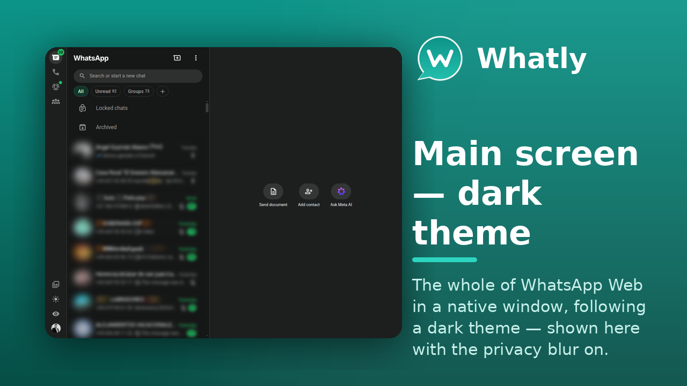
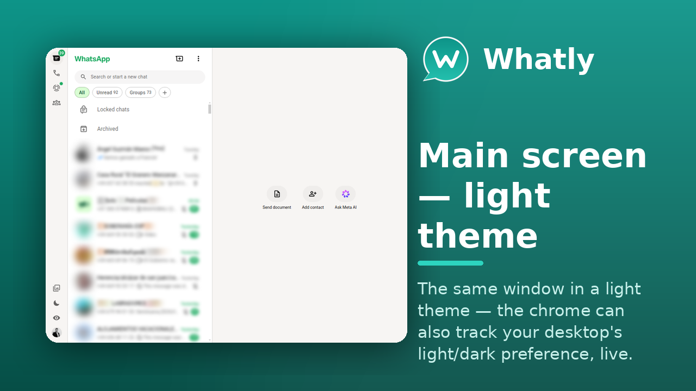
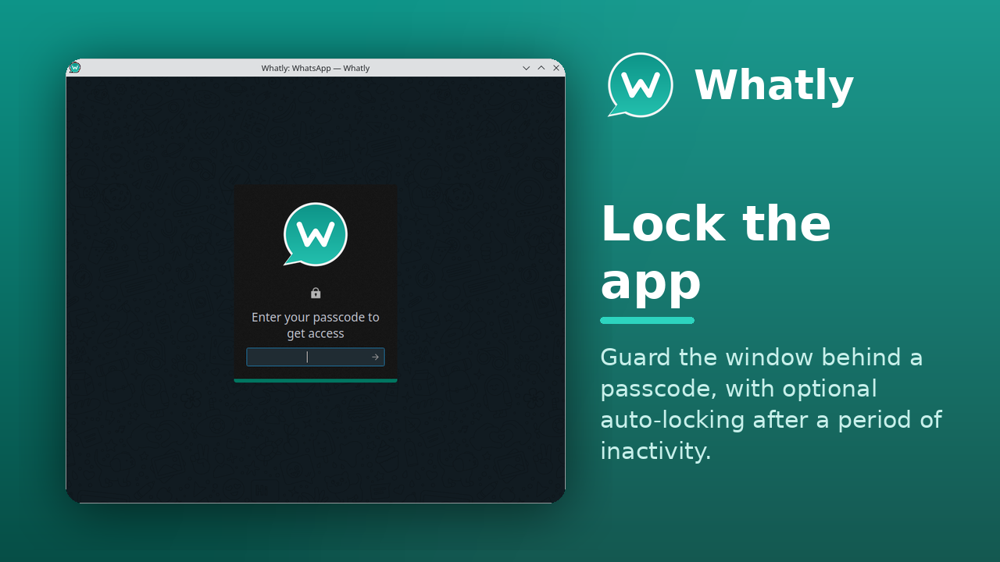
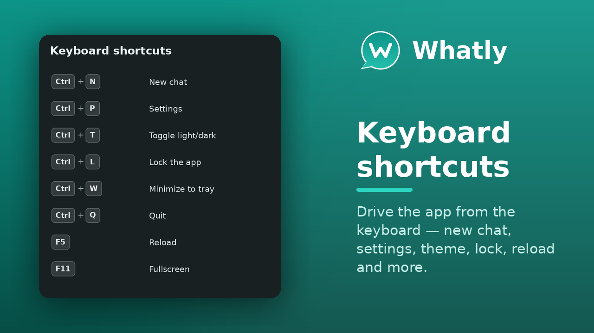
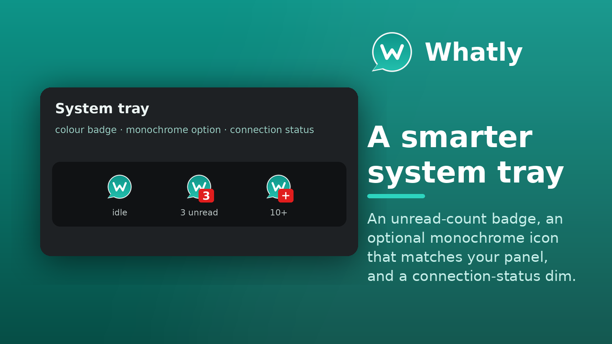

WhatsApp Web, as a real desktop app
A feature-rich, MIT-licensed desktop client for WhatsApp Web — chat themes, a privacy blur, scheduled messages, multiple accounts, spell-check, an app lock and more.


A feature-rich, MIT-licensed desktop client for WhatsApp Web — chat themes, a privacy blur, scheduled messages, multiple accounts, spell-check, an app lock and more.
WhatsApp Web out of the browser tab and into a proper desktop app.
Write a message and have it sent later — it still goes out on the next launch if the app was closed when it came due.
14 chat themes, a chat wallpaper, custom CSS & JavaScript addons, and a privacy blur that hides your chats until you hover.
GPU, process-model, JS-heap and cache controls, a WebRTC IP-leak shield, and a SOCKS5/HTTP proxy — all from Settings.
As tabs, all at once in a grid, or wholly separate windows with --profile — each its own session and settings.
Render WhatsApp Web in any system font, and check spelling in 31 languages at once.
Guard the window behind a passcode, with optional auto-locking after a period of inactivity.
Native notifications, a smarter system tray (badge, monochrome, connection status), and a connection watchdog that reconnects itself.
Light or dark — or track your system's light/dark preference, live.
One codebase — a native app on Linux and Windows 10+, plus an experimental macOS build.
The same WhatsApp Web, with the desktop conveniences a browser tab can't give you.
| Feature | Browser tab | WhatSie (upstream) | Whatly |
|---|---|---|---|
| Runs as its own desktop app | ✗ | ✓ | ✓ |
| System tray with unread badge | ✗ | ✓ | ✓ |
| Chat themes, wallpaper & custom CSS | ✗ | ✓ | ✓ |
| Privacy blur | ✗ | ✓ | ✓ |
| App lock / passcode | ✗ | ✓ | ✓ |
| Multiple accounts, separate sessions | ~ | ~ | ✓ |
| Spell check in many languages at once | ~ | ✗ | ✓ |
| Scheduled messages | ✗ | ✗ | ✓ |
| Font-family picker | ✗ | ✗ | ✓ |
| Follows system light/dark, live | ✓ | ~ | ✓ |
| Linux packages (snap · Flatpak · AppImage · deb · rpm · AUR) | — | ~ | ✓ |
| Windows build | — | ✗ | ✓ |
| macOS build (experimental) | — | ✗ | ~ |
| Open source (MIT) | — | ✓ | ✓ |
| Actively maintained | — | ~ | ✓ |
✓ full · ~ partial or needs a workaround · ✗ not available · — not applicable


On any distribution with snapd:
snap install whatly
Available everywhere:
Modest — it's WhatsApp Web in a native shell.
One codebase, a proper desktop app. Click any shot to enlarge.








Whatly is developed in the open — issues, milestones and the project board are all public.
Planned and in-progress work lives on the Whatly project board.
Report bugs or request features on the issue tracker — or press F1 in the app.
Pull requests are welcome. New interface strings ship translated into 15 languages. See the repository.
The questions people ask before installing.
.deb, Fedora/COPR, and the Arch AUR) and Windows 10 or newer. There is also an experimental, unsigned macOS .dmg attached to each release (community-testing preview). The source builds with CMake + Qt 6.whatly --profile=<name> — each has its own session, settings and Chromium storage, and the tray badge sums the unread count across them all.F1 in the app and use Report a Bug — it pre-fills a GitHub issue with your version, commit and recent log. Or open one directly on the issue tracker.